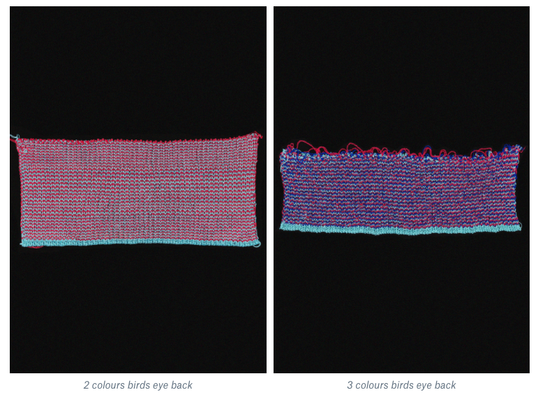
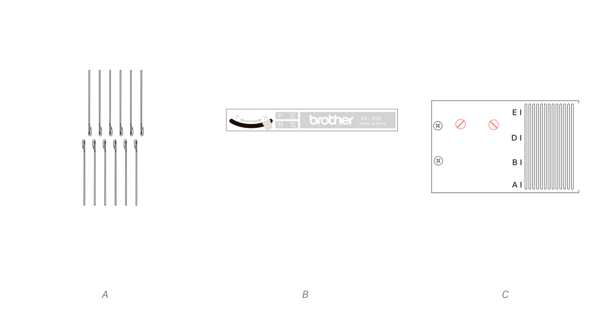
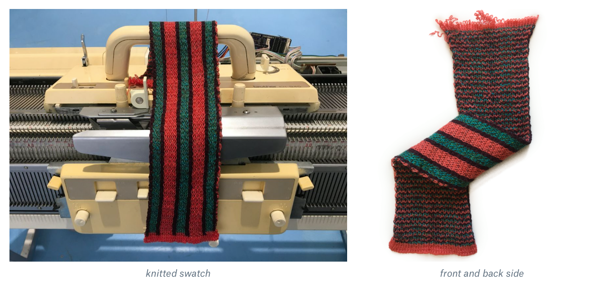

INTRO
The Ayab version 0.95 has new DBJ variation called Heart of Pluto. Thanks to Sarah Spencer!
Heart of Pluto is one method of multicolour knitting with ribber attachment.
The back side of the knit is birds eye jacquard type.
Back side of resulting knitting:

When knitting multicolour you are using color changer and knit the colors separately – so remember you will knit double, triple or quadruple number of rows.
These swatches are knitted with very fine yarns, thus the fabric is quite soft and thin. The yarns are 2/30 tex wool.
Except the Ayab 0.95 and Brother knitting machine KH–9xx, you will need:
- Ribber attachment KR–850 (Guide)
- Color changer KH–930 (Guide)
INSTRUCTIONS
1. PREPARATION OF PARTS
Setting up the Ribber attachment KR–850:
- Ribber attachment KR–850 Guide
- set half-pitch lever to H (P-H lever=H, see KR850 guide, page 13),
- set racking grip handle to 5 (Rack=5, KR850 guide p.13)
- set bracket lever to the normal (highest) position (KR850 guide, p.14)
Setting up the Color changer KH–930:
- set up the color changer according the guide
- note for Cch: place yarns in order from 1, 2, 3 not to cross the yarns
Setting up needles:
- Make sure you have an even number of needles on both beds
- Make sure the set of needles starts with ribber needle on the left side and ends with main bed needle on the right side like on illustration A
- Make sure half pitch lever is on H (illustration B)
- If needles are not exactly in the middle of each other adjust the position with the screws on illustration C
- Needles L18-R18= 36 needles on both beds for stripe swatch

Tension wheel:
- Stitch Size depends on your yarn. I'm using very thin yarn with 0 tensions.
Placing yarn:
- I'm knitting with thin yarns 2/30 tex, usually using two of them in one yarn feeder.
- I highly recommend using fine yarn bar when knitting with fine yarns.
- Unit tex means mass of yarn in grams per 1'000 meters length. Basic Tex Unit is sign like tex.
Comb and weights:
- I'm using standard comb and big size weights.
2. SETTING UP AYAB
Color arrangement of HoP:
Image:
- as first sample you can use this graphic
- on these stripes you can see which needles knits which colour
Names of colours:
A– white
B– grey
C– black
1/C–black– 6x2
2/B–grey– 3x4
3/A–white– 2x6
Check the number of selected needles to see which colour knits.
The first knitted colour is black (C), than knits grey (B), than knits white (A).
The actual knitted colour is shown at the botton of a screen when using row counter on your machine, remember, the number of rows is doubled or tripled
- Download this image
- In the AYAB software, left-click "Load pattern" and select the image stripes36x100.png
- Knitting mode: Heart of Pluto
- Colors: 3
- Start row: 1
- Infinite repeat: leave unchecked
- Start needle: 18
- Stop needle: 18
- Alignment: center
- Configure
- Pull the carriage behind left sensor
- Knit!
3. KNITTING
Start
- Cast on in white in Full needle rib as shown on pages 26-28 of the KR850 manual.
First row
Carriage:
- Main bed: All buttons out; N mode; Tension: –2.
- Ribber: All cam levers down; Both lili buttons to I; Tension: –2.
- Lower slide lever to II.
Second and third row
Carriage:
- Main bed: Left part button in; N mode; Tension: –2.
- Ribber: Right part cam lever up; Both lili buttons to I; Tension: –2.
- Lower slide lever to I.
- Carriage on left, behind the left sensor.
- Set the row counter, RC=000.
HoP jacquard
Carriage:
- Main bed: Both part buttons in; KC1 or KC2 mode; Tension: 1.
- Ribber: Both sliders (cam levers) up. Both lili buttons to lili; Tension: 0,2.
- Lower slide lever to lili (center).
* Configure AYAB
Knit!
Press the colour changer button for the dark red yarn (colour C).
Bring the carriage out past the sensor and stop to wait for the initial triple-beep.
Knit across, wait for the beep.
Knit back and into the color changer, the beep happens as you do so.
Press the button to change to green (colour B).
Knit across, wait for the beep.
Knit back and into the color changer, the beep happens as you do so.
Press the button to change to orange (colour A).
Continue like this.
If not sure which colour use next, check the left ribber needle for last knitted colour.

LINKS AND RESOURCES
More depiction of the Heart of Pluto method
Other guides and manuals
Forums on GitHub